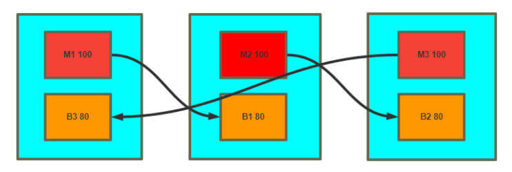

Keepalived 架构和安装 Keepalived 介绍 vrrp 协议的软件实现，原生设计目的为了高可用 ipvs服务
keepalived 是高可用集群的通用无状态应用解决方案
官网：http://keepalived.org/
功能：
基于vrrp协议完成地址流动
为vip地址所在的节点生成ipvs规则(在配置文件中预先定义)
为ipvs集群的各RS做健康状态检测
基于脚本调用接口完成脚本中定义的功能，进而影响集群事务，以此支持nginx、haproxy等服务
Keepalived 架构 官方文档：
1 2 https://keepalived.org/doc/ http://keepalived.org/documentation.html
Keepalived进程树
1 2 3 Keepalived <-- Parent process monitoring children \_ Keepalived <-- VRRP child \_ Keepalived <-- Healthchecking child
Keepalived 环境准备
各节点时间必须同步：ntp, chrony
关闭防火墙及SELinux
各节点之间可通过主机名互相通信：非必须
建议使用/etc/hosts文件实现：非必须
各节点之间的root用户可以基于密钥认证的ssh服务完成互相通信：非必须
Keepalived 相关文件
软件包名：keepalived
主程序文件：/usr/sbin/keepalived
主配置文件：/etc/keepalived/keepalived.conf
配置文件示例：/usr/share/doc/keepalived/
Unit File：/lib/systemd/system/keepalived.service
Unit File的环境配置文件：
/etc/sysconfig/keepalived CentOS
/etc/default/keepalived Ubuntu
注意：CentOS 7 上有 bug，可能有下面情况出现
1 2 systemctl restart keepalived #新配置可能无法生效 systemctl stop keepalived;systemctl start keepalived #无法停止进程，需要 kill 停止
Keepalived 安装 包安装 1 2 3 4 5 [root@centos ~] [root@ubuntu1804 ~]
CentOS 安装 keepalived 1 2 3 4 5 6 7 8 9 10 11 [root@centos8 ~] [root@centos8 ~] [root@centos8 ~] [root@centos8 ~] [root@centos8 ~] ...... ├─keepalived(12835)─┬─keepalived(12836) │ └─keepalived(12837) ......
Ubuntu 安装 keepalived 范例：Ubuntu22.04
1 2 3 4 5 6 7 8 9 10 11 12 13 14 15 16 17 18 19 20 [root@ubuntu2204 ~] [root@ubuntu2204 ~] [root@ubuntu2204 ~] ○ keepalived.service - Keepalive Daemon (LVS and VRRP) Loaded: loaded (/lib/systemd/system/keepalived.service; enabled; vendor preset: enabled) Active: inactive (dead) Condition: start condition failed at Thu 2023-01-12 15:28:42 CST; 4s ago └─ ConditionFileNotEmpty=/etc/keepalived/keepalived.conf was not met 1月 12 15:26:47 ubuntu2204.wang.org systemd[1]: Condition check resulted in Keepalive Daemon (LVS and VRRP) being skipped. 1月 12 15:28:42 ubuntu2204.wang.org systemd[1]: Condition check resulted in Keepalive Daemon (LVS and VRRP) being skipped. [root@ubuntu2204 ~] [root@ubuntu2204 ~] [root@ubuntu2204 ~]
编译安装 1 2 3 4 5 6 7 8 9 10 11 12 13 14 15 16 17 18 19 20 21 22 23 24 25 26 27 28 29 30 31 32 33 34 35 36 37 38 39 40 41 42 43 44 45 46 47 48 49 50 51 52 53 54 55 56 57 58 59 60 61 62 63 64 65 66 67 68 69 70 71 72 73 74 75 76 77 78 79 80 81 82 83 84 85 86 87 88 89 90 91 92 93 94 95 96 97 98 99 100 101 102 103 104 105 106 107 108 109 110 111 112 113 114 115 116 117 118 119 120 121 122 123 124 125 126 127 128 129 130 131 132 133 134 135 136 137 138 139 140 141 142 143 144 145 146 147 148 149 150 151 152 153 154 155 156 157 158 159 160 161 162 163 164 165 166 167 168 169 170 171 172 173 174 175 176 177 178 179 180 181 182 183 184 185 186 187 188 189 190 191 192 193 194 195 196 197 198 199 200 201 202 [root@ubuntu2004 ~] [root@ubuntu2004 ~] libnl-3-dev libnl-genl-3-dev libssl-dev libxtables-dev libip4tc-dev libip6tc-dev libipset-dev libmagic-dev \ libsnmp-dev libglib2.0-dev libpcre2-dev libnftnl-dev libmnl-dev libsystemd-dev [root@ubuntu1804 ~] [root@ubuntu1804 ~] [root@centos7 ~] [root@centos7 ~] [root@centos7 ~] [root@centos7 ~] [root@centos7 keepalived-2.0.20] [root@centos7 keepalived-2.0.20] [root@centos7 keepalived-2.0.20] [root@centos7 ~] Keepalived v2.0.20 (01/22,2020) [root@centos7 ~] [root@centos7 ~] [Unit] Description=LVS and VRRP High Availability Monitor After=network-online.target syslog.target Wants=network-online.target [Service] Type=forking PIDFile=/run/keepalived.pid KillMode=process EnvironmentFile=-/usr/local/keepalived/etc/sysconfig/keepalived ExecStart=/usr/local/keepalived/sbin/keepalived $KEEPALIVED_OPTIONS ExecReload=/bin/kill -HUP $MAINPID [Install] WantedBy=multi-user.target [root@centos7 ~] KEEPALIVED_OPTIONS="-D" [root@centos7 ~] Job for keepalived.service failed because the control process exited with error code. See "systemctl status keepalived.service" and "journalctl -xe" for details. [root@centos7 ~] -- Subject: Unit keepalived.service has begun start-up -- Defined-By: systemd -- Support: http://lists.freedesktop.org/mailman/listinfo/systemd-devel -- -- Unit keepalived.service has begun starting up. Mar 29 00:38:17 centos7.wang.org Keepalived[1123]: Starting Keepalived v2.0.20 (01/22,2020) Mar 29 00:38:17 centos7.wang.org Keepalived[1123]: Running on Linux 3.10.0- 1062.el7.x86_64 Mar 29 00:38:17 centos7.wang.org Keepalived[1123]: Command line: '/usr/local/keepalived/sbin/keepalived' '-D Mar 29 00:38:17 centos7.wang.org Keepalived[1123]: Unable to find configuration file /etc/keepalived/keepali #默认配置文件路径 Mar 29 00:38:17 centos7.wang.org Keepalived[1123]: Stopped Keepalived v2.0.20 (01/22,2020) Mar 29 00:38:17 centos7.wang.org systemd[1]: keepalived.service: control process exited, code=exited status= Mar 29 00:38:17 centos7.wang.org systemd[1]: Failed to start LVS and VRRP High Availability Monitor. -- Subject: Unit keepalived.service has failed -- Defined-By: systemd -- Support: http://lists.freedesktop.org/mailman/listinfo/systemd-devel -- -- Unit keepalived.service has failed. -- -- The result is failed. Mar 29 00:38:17 centos7.wang.org systemd[1]: Unit keepalived.service entered failed state. Mar 29 00:38:17 centos7.wang.org systemd[1]: keepalived.service failed. Mar 29 00:38:17 centos7.wang.org polkitd[565]: Unregistered Authentication Agent for unix-process:1117:11546 #创建配置文件 [root@centos7 ~]# mkdir /etc/keepalived [root@centos7 ~]# cp /usr/local/keepalived/etc/keepalived/keepalived.conf.sample /etc/keepalived/keepalived.conf #再次启动成功 [root@centos7 ~]# systemctl enable --now keepalived.service Created symlink from /etc/systemd/system/multi-user.target.wants/keepalived.service to /usr/lib/systemd/system/keepalived.service. [root@centos7 ~]# ip a 1: lo: <LOOPBACK,UP,LOWER_UP> mtu 65536 qdisc noqueue state UNKNOWN group default qlen 1000 link/loopback 00:00:00:00:00:00 brd 00:00:00:00:00:00 inet 127.0.0.1/8 scope host lo valid_lft forever preferred_lft forever inet6 ::1/128 scope host valid_lft forever preferred_lft forever 2: eth0: <BROADCAST,MULTICAST,UP,LOWER_UP> mtu 1500 qdisc pfifo_fast state UP group default qlen 1000 link/ether 00:0c:29:32:80:38 brd ff:ff:ff:ff:ff:ff inet 10.0.0.7/24 brd 10.0.0.255 scope global noprefixroute eth0 valid_lft forever preferred_lft forever inet 192.168.200.16/32 scope global eth0 valid_lft forever preferred_lft forever inet 192.168.200.17/32 scope global eth0 valid_lft forever preferred_lft forever inet 192.168.200.18/32 scope global eth0 valid_lft forever preferred_lft forever inet6 fe80::20c:29ff:fe32:8038/64 scope link valid_lft forever preferred_lft forever [root@centos7 ~]# hostname -I 10.0.0.7 192.168.200.16 192.168.200.17 192.168.200.18 [root@centos7 ~]# ping 192.168.200.16 PING 192.168.200.16 (192.168.200.16) 56(84) bytes of data. ping: sendmsg: Operation not permitted ping: sendmsg: Operation not permitted ^C --- 192.168.200.16 ping statistics --- 2 packets transmitted, 0 received, 100% packet loss, time 1000ms #默认生成iptables规则,无法访问VIP,编译时可以加--disable-fwmark禁用生成iptables规则 [root@centos7 ~]# iptables -vnL Chain INPUT (policy ACCEPT 860 packets, 46129 bytes) pkts bytes target prot opt in out source destination 0 0 DROP all -- * * 0.0.0.0/0 192.168.200.18 0 0 DROP all -- * * 0.0.0.0/0 192.168.200.17 0 0 DROP all -- * * 0.0.0.0/0 192.168.200.16 Chain FORWARD (policy ACCEPT 0 packets, 0 bytes) pkts bytes target prot opt in out source destination Chain OUTPUT (policy ACCEPT 1737 packets, 1188K bytes) pkts bytes target prot opt in out source destination 4 336 DROP all -- * * 192.168.200.18 0.0.0.0/0 0 0 DROP all -- * * 192.168.200.17 0.0.0.0/0 0 0 DROP all -- * * 192.168.200.16 0.0.0.0/0 [root@centos7 ~]# vim /etc/keepalived/keepalived.conf #注释下面一行 #vrrp_strict #重启动不生效，有bug [root@centos7 ~]# systemctl restart keepalived.service [root@centos7 ~]# ping 192.168.200.16 PING 192.168.200.16 (192.168.200.16) 56(84) bytes of data. ping: sendmsg: Operation not permitted ping: sendmsg: Operation not permitted ^C --- 192.168.200.16 ping statistics --- 2 packets transmitted, 0 received, 100% packet loss, time 999ms #无法关闭进程 [root@centos7 ~]# systemctl stop keepalived.service [root@centos7 ~]# ps aux|grep keepalived root 1383 0.0 0.1 69672 1020 ? Ss 00:57 0:00 /usr/local/keepalived/sbin/keepalived -D root 1384 0.0 0.2 69804 2308 ? S 00:57 0:00 /usr/local/keepalived/sbin/keepalived -D root 1385 0.0 0.1 69672 1308 ? S 00:57 0:00 /usr/local/keepalived/sbin/keepalived -D root 1392 0.0 0.0 112712 964 pts/0 R+ 00:59 0:00 grep --color=auto keepalived [root@centos7 ~]# killall keepalived [root@centos7 ~]# systemctl start keepalived.service [root@centos7 ~]# ping 192.168.200.16 PING 192.168.200.16 (192.168.200.16) 56(84) bytes of data. 64 bytes from 192.168.200.16: icmp_seq=1 ttl=64 time=0.093 ms ^C --- 192.168.200.16 ping statistics --- 1 packets transmitted, 1 received, 0% packet loss, time 0ms rtt min/avg/max/mdev = 0.093/0.093/0.093/0.000 ms
KeepAlived 配置说明 配置文件组成部分 配置文件
1 /etc/keepalived/keepalived.conf
配置文件组成
GLOBAL CONFIGURATION
Global definitions：定义邮件配置，route_id，vrrp配置，多播地址等
VRRP CONFIGURATION
VRRP instance(s)：定义每个vrrp虚拟路由器
LVS CONFIGURATION
Virtual server group(s)
Virtual server(s)：LVS集群的VS和RS
配置语法说明 帮助
全局配置 1 2 3 4 5 6 7 8 9 10 11 12 13 14 15 16 17 18 global_defs { notification_email { root@localhost root@wangxiaochun.com 29308620@qq.com } notification_email_from keepalived@localhost smtp_server 127.0.0.1 smtp_connect_timeout 30 router_id ka1.example.com vrrp_skip_check_adv_addr vrrp_strict vrrp_garp_interval 0 vrrp_gna_interval 0 vrrp_mcast_group4 224.0.0.18 vrrp_iptables }
配置虚拟路由器 1 2 3 4 5 6 7 8 9 10 11 12 13 14 15 16 17 18 19 20 21 22 23 24 25 26 27 28 29 vrrp_instance <STRING> { 配置参数 ...... } state MASTER|BACKUP interface IFACE_NAME virtual_router_id VRID priority 100 advert_int 1 authentication { auth_type AH|PASS auth_pass <PASSWORD> } virtual_ipaddress { <IPADDR>/<MASK> brd <IPADDR> dev <STRING> scope <SCOPE> label <LABEL> 192.168.200.100 192.168.200.101/24 dev eth1 192.168.200.102/24 dev eth2 label eth2:1 } track_interface { eth0 eth1 … }
范例：
1 2 3 4 5 6 7 8 9 10 11 12 13 14 15 16 17 18 19 20 21 22 23 24 25 26 27 28 29 30 31 32 33 34 35 36 37 38 39 40 41 42 43 44 45 46 47 48 49 50 51 52 53 54 55 56 57 58 59 60 61 62 63 64 65 66 67 68 69 70 71 72 73 74 75 76 77 78 79 80 81 82 [root@centos7 ~] ! Configuration File for keepalived global_defs { notification_email { acassen@firewall.loc failover@firewall.loc sysadmin@firewall.loc } notification_email_from Alexandre.Cassen@firewall.loc smtp_server 192.168.200.1 smtp_connect_timeout 30 router_id LVS_DEVEL vrrp_skip_check_adv_addr vrrp_strict vrrp_garp_interval 0 vrrp_gna_interval 0 } vrrp_instance VI_1 { state MASTER interface eth0 virtual_router_id 80 priority 100 advert_int 1 authentication { auth_type PASS auth_pass 1111 } virtual_ipaddress { 192.168.200.16 192.168.200.17 192.168.200.18 } } [root@centos7 ~] [root@centos7 ~] 1: lo: <LOOPBACK,UP,LOWER_UP> mtu 65536 qdisc noqueue state UNKNOWN group default qlen 1000 link /loopback 00:00:00:00:00:00 brd 00:00:00:00:00:00 inet 127.0.0.1/8 scope host lo valid_lft forever preferred_lft forever inet6 ::1/128 scope host valid_lft forever preferred_lft forever 2: eth0: <BROADCAST,MULTICAST,UP,LOWER_UP> mtu 1500 qdisc pfifo_fast state UP group default qlen 1000 link /ether 00:0c:29:33:b4:1a brd ff:ff:ff:ff:ff:ff inet 10.0.0.17/24 brd 10.0.0.255 scope global noprefixroute eth0 valid_lft forever preferred_lft forever inet 192.168.200.16/32 scope global eth0 valid_lft forever preferred_lft forever inet 192.168.200.17/32 scope global eth0 valid_lft forever preferred_lft forever inet 192.168.200.18/32 scope global eth0 valid_lft forever preferred_lft forever inet6 fe80::20c:29ff:fe33:b41a/64 scope link valid_lft forever preferred_lft forever [root@centos7 ~] PING 192.168.200.16 (192.168.200.16) 56(84) bytes of data. ^C --- 192.168.200.16 ping statistics --- 6 packets transmitted, 0 received, 100% packet loss, time 5002ms [root@centos8 ~] Chain INPUT (policy ACCEPT 0 packets, 0 bytes) pkts bytes target prot opt in out source destination Chain FORWARD (policy ACCEPT 0 packets, 0 bytes) pkts bytes target prot opt in out source destination Chain OUTPUT (policy ACCEPT 0 packets, 0 bytes) pkts bytes target prot opt in out source destination [root@centos8 ~] PING 192.168.200.16 (192.168.200.16) 56(84) bytes of data. ^C --- 192.168.200.16 ping statistics --- 6 packets transmitted, 0 received, 100% packet loss, time 143ms
启用 Keepalived 日志功能 范例：包安装实现日志功能,注意: 编译安装可能有问题
1 2 3 4 5 6 7 8 9 10 11 12 13 14 15 16 17 18 [root@ka1 ~] KEEPALIVED_OPTIONS="-D -S 6" [root@ka1 ~] local6.* /var/log/keepalived.log [root@ka1 ~] [root@ka1 ~] Apr 14 09:25:51 ka1 Keepalived_vrrp[1263]: Sending gratuitous ARP on eth0 for 10.0.0.10 Apr 14 09:25:51 ka1 Keepalived_vrrp[1263]: Sending gratuitous ARP on eth0 for 10.0.0.10 Apr 14 09:25:51 ka1 Keepalived_vrrp[1263]: Sending gratuitous ARP on eth0 for 10.0.0.10 Apr 14 09:25:51 ka1 Keepalived_vrrp[1263]: Sending gratuitous ARP on eth0 for 10.0.0.10 Apr 14 09:25:56 ka1 Keepalived_vrrp[1263]: Sending gratuitous ARP on eth0 for 10.0.0.10 Apr 14 09:25:56 ka1 Keepalived_vrrp[1263]: (VI_1) Sending/queueing gratuitous ARPs on eth0 for 10.0.0.10 Apr 14 09:25:56 ka1 Keepalived_vrrp[1263]: Sending gratuitous ARP on eth0 for 10.0.0.10 Apr 14 09:25:56 ka1 Keepalived_vrrp[1263]: Sending gratuitous ARP on eth0 for 10.0.0.10 Apr 14 09:25:56 ka1 Keepalived_vrrp[1263]: Sending gratuitous ARP on eth0 for 10.0.0.10 Apr 14 09:25:56 ka1 Keepalived_vrrp[1263]: Sending gratuitous ARP on eth0 for 10.0.0.10
实现 Keepalived 独立子配置文件 当生产环境复杂时， /etc/keepalived/keepalived.conf 文件中保存所有集群的配置会导致内容过多，不易管理
可以将不同集群的配置，比如：不同集群的VIP配置放在独立的子配置文件中
利用include 指令可以实现包含子配置文件
格式:
范例:
1 2 3 4 5 6 7 8 9 10 11 12 13 14 15 16 17 [root@ka1-centos8 ~] [root@ka1-centos8 ~] global_defs { notification_email { 29308620@qq.com } notification_email_from 29308620@qq.com smtp_server 127.0.0.1 smtp_connect_timeout 30 router_id ka1.wang.org vrrp_skip_check_adv_addr vrrp_garp_interval 0 vrrp_gna_interval 0 } include /etc/keepalived/conf.d/*.conf [root@ka1-centos8 ~]
Keepalived 实现 VRRP 实现master/slave的 Keepalived 单主架构 MASTER配置 1 2 3 4 5 6 7 8 9 10 11 12 13 14 15 16 17 18 19 20 21 22 23 24 25 26 27 28 29 30 31 [root@ka1-centos8 ~] global_defs { notification_email { root@localhost } notification_email_from keepalived@localhost smtp_server 127.0.0.1 smtp_connect_timeout 30 router_id ka1.example.com vrrp_skip_check_adv_addr vrrp_garp_interval 0 vrrp_gna_interval 0 vrrp_mcast_group4 224.0.0.18 } vrrp_instance VI_1 { state MASTER interface eth0 virtual_router_id 66 priority 100 advert_int 1 authentication { auth_type PASS auth_pass 12345678 } virtual_ipaddress { 10.0.0.10 dev eth0 label eth0:0 } }
BACKUP配置 1 2 3 4 5 6 7 8 9 10 11 12 13 14 15 16 17 18 19 20 21 22 23 24 25 26 27 28 29 30 31 [root@ka2-centos8 ~] global_defs { notification_email { root@localhost } notification_email_from keepalived@localhost smtp_server 127.0.0.1 smtp_connect_timeout 30 router_id ka2.example.com vrrp_skip_check_adv_addr vrrp_garp_interval 0 vrrp_gna_interval 0 vrrp_mcast_group4 224.0.0.18 } vrrp_instance VI_1 { state BACKUP interface eth0 virtual_router_id 66 priority 80 advert_int 1 authentication { auth_type PASS auth_pass 12345678 } virtual_ipaddress { 10.0.0.10 dev eth0 label eth0:0 } }
抓包观察
1 tcpdump -i eth0 -nn host 224.0.0.18
VRRP 协议包
脑裂 主备节点同时拥有同一个VIP，此时为脑裂理象
注意：脑裂现象原因
心跳线故障： 通过修改网卡的工作模式实现模拟，断开网卡方式无法模拟
防火墙错误配置：在从节点服务器执行iptables -A INPUT -s 主服务心跳网卡IP -j DROP 进行模拟
Keepalived 配置错误：interface错误，virtual_router_id不一致，密码不一致，优先级相同
范例: 发现脑裂
1 2 3 4 5 6 [root@centos7 ~] ARPING 10.0.0.100 from 192.168.10.130 eth1 Unicast reply from 10.0.0.100 [00:0C:29:7E:DA:E6] 0.801ms Unicast reply from 10.0.0.100 [00:0C:29:97:AF:4F] 0.814ms Sent 1 probes (1 broadcast(s)) Received 2 response(s)
抢占模式和非抢占模式 非抢占模式 nopreempt 默认为抢占模式 preempt，即当高优先级的主机恢复在线后，会抢占低先级的主机的master角色，造成网络抖动，建议设置为非抢占模式 nopreempt ，即高优先级主机恢复后，并不会抢占低优先级主机的 master 角色
注意: 非抢占模式下,如果原主机down机, VIP迁移至的新主机, 后续新主机也发生down（（keepalived 服务down））时,VIP还会迁移回修复好的原主机
但如果新主机的服务down掉（keepalived服务正常），原主机也不会接管VIP，仍会由新主机拥有VIP即非抢占式模式，只是适合当主节点宕机，切换到从节点的一次性的高可用性，后续即使当原主节点修复好，仍无法再次起到高用功能
注意：要关闭 VIP抢占，必须将各 Keepalived 服务器 state 配置为 BACKUP
1 2 3 4 5 6 7 8 9 10 11 12 13 14 15 16 17 18 vrrp_instance VI_1 { state BACKUP interface eth0 virtual_router_id 66 priority 100 advert_int 1 nopreempt vrrp_instance VI_1 { state BACKUP interface eth0 virtual_router_id 66 priority 80 advert_int 1
抢占延迟模式 preempt_delay 抢占延迟模式，即优先级高的主机恢复后，不会立即抢回VIP，而是延迟一段时间（默认300s）再抢回 VIP
注意：需要各keepalived服务器state为BACKUP,并且不要启用 vrrp_strict
范例：
1 2 3 4 5 6 7 8 9 10 11 12 13 14 15 16 17 vrrp_instance VI_1 { state BACKUP interface eth0 virtual_router_id 66 priority 100 advert_int 1 preempt_delay 60 vrrp_instance VI_1 { state BACKUP interface eth0 virtual_router_id 66 priority 80 advert_int 1
VIP 单播配置 默认keepalived主机之间利用多播相互通告消息，会造成网络拥塞，可以替换成单播，减少网络流量
另外：有些公有云不支持多播，可以利用单播实现
注意：启用 vrrp_strict 时，不能启用单播
1 2 3 4 5 6 unicast_src_ip <IPADDR> unicast_peer { <IPADDR> ...... }
范例：
1 2 3 4 5 6 7 8 9 10 11 12 13 14 15 16 17 18 19 20 21 22 23 24 25 26 27 28 29 30 31 32 33 34 35 36 37 38 39 40 41 42 43 44 45 46 47 48 49 50 51 52 53 54 55 56 57 58 59 60 61 62 63 64 65 66 67 68 69 70 71 72 73 74 75 76 77 78 79 80 81 82 83 84 85 86 87 [root@ka1-centos8 ~] ! Configuration File for keepalived global_defs { notification_email { acassen@firewall.loc failover@firewall.loc sysadmin@firewall.loc } notification_email_from Alexandre.Cassen@firewall.loc smtp_server 192.168.200.1 smtp_connect_timeout 30 router_id ka1.wang.org vrrp_skip_check_adv_addr vrrp_garp_interval 0 vrrp_gna_interval 0 vrrp_mcast_group4 239.0.0.0 } vrrp_instance VI_1 { state MASTER interface eth0 virtual_router_id 66 priority 100 advert_int 1 authentication { auth_type PASS auth_pass 123456 } virtual_ipaddress { 10.0.0.10/24 dev eth0 label eth0:1 } unicast_src_ip 10.0.0.8 unicast_peer{ 10.0.0.18 10.0.0.28 } } [root@ha1-centos8 ~] 10.0.0.8 10.0.0.10 [root@ka2-centos8 ~] ! Configuration File for keepalived global_defs { notification_email { acassen@firewall.loc failover@firewall.loc sysadmin@firewall.loc } notification_email_from Alexandre.Cassen@firewall.loc smtp_server 192.168.200.1 smtp_connect_timeout 30 router_id ka2.wang.org vrrp_skip_check_adv_addr vrrp_garp_interval 0 vrrp_gna_interval 0 vrrp_mcast_group4 239.0.0.0 } vrrp_instance VI_1 { state SLAVE interface eth0 virtual_router_id 66 priority 80 advert_int 1 authentication { auth_type PASS auth_pass 123456 } virtual_ipaddress { 10.0.0.10/24 dev eth0 label eth0:1 } unicast_src_ip 10.0.0.18 unicast_peer { 10.0.0.8 } } [root@ka2-centos8 ~] 10.0.0.18
范例: 抓包观察
1 2 3 4 5 6 root@centos6 ~] tcpdump: verbose output suppressed, use -v or -vv for full protocol decode listening on eth0, link-type EN10MB (Ethernet), capture size 65535 bytes 23:37:48.069158 IP 10.0.0.8 > 10.0.0.18: VRRPv2, Advertisement, vrid 66, prio 100, authtype simple, intvl 1s, length 20 23:37:49.070013 IP 10.0.0.8 > 10.0.0.18: VRRPv2, Advertisement, vrid 66, prio 100, authtype simple, intvl 1s, length 20 23:37:50.071144 IP 10.0.0.8 > 10.0.0.18: VRRPv2, Advertisement, vrid 66, prio 100, authtype simple, intvl 1s, length 20
Keepalived 通知脚本配置 当keepalived的状态变化时，可以自动触发脚本的执行，比如：发邮件通知用户
默认以用户keepalived_script身份执行脚本，如果此用户不存在，以root执行脚本
可以用下面指令指定脚本执行用户的身份
1 2 3 4 5 global_defs { ...... script_user <USER> ...... }
通知脚本类型
1 notify_master <STRING>|<QUOTED-STRING>
1 notify_backup <STRING>|<QUOTED-STRING>
1 notify_fault <STRING>|<QUOTED-STRING>
通用格式的通知触发机制，一个脚本可完成以上三种状态的转换时的通知
1 notify <STRING>|<QUOTED-STRING>
1 notify_stop <STRING>|<QUOTED-STRING>
脚本的调用方法 在 vrrp_instance VI_1 语句块的末尾加下面行
1 2 3 notify_master "/etc/keepalived/notify.sh master" notify_backup "/etc/keepalived/notify.sh backup" notify_fault "/etc/keepalived/notify.sh fault"
实战案例1：实现 Keepalived 状态切换的通知脚本 以下脚本支持RHEL和Ubuntu系统
1 2 3 4 5 6 7 8 9 10 11 12 13 14 15 16 17 18 19 20 21 22 23 24 25 26 27 28 29 30 31 32 33 34 35 36 37 38 39 40 41 42 43 44 45 46 47 48 49 50 51 52 53 54 55 56 57 58 59 60 61 62 63 64 65 66 67 68 69 70 71 72 73 74 75 76 77 78 79 80 81 82 83 84 85 86 87 88 89 90 91 92 93 94 95 [root@ka1 ~] contact='root@wangxiaochun.com' email_send='29308620@qq.com' email_passwd='dgezyimkdswwbhea' email_smtp_server='smtp.qq.com' . /etc/os-release msg_error echo -e "\033[1;31m$1 \033[0m" } msg_info echo -e "\033[1;32m$1 \033[0m" } msg_warn echo -e "\033[1;33m$1 \033[0m" } color RES_COL=60 MOVE_TO_COL="echo -en \\033[${RES_COL} G" SETCOLOR_SUCCESS="echo -en \\033[1;32m" SETCOLOR_FAILURE="echo -en \\033[1;31m" SETCOLOR_WARNING="echo -en \\033[1;33m" SETCOLOR_NORMAL="echo -en \E[0m" echo -n "$1 " && $MOVE_TO_COL echo -n "[" if [ $2 = "success" -o $2 = "0" ] ;then ${SETCOLOR_SUCCESS} echo -n $" OK " elif [ $2 = "failure" -o $2 = "1" ] ;then ${SETCOLOR_FAILURE} echo -n $"FAILED" else ${SETCOLOR_WARNING} echo -n $"WARNING" fi ${SETCOLOR_NORMAL} echo -n "]" echo } install_sendemail if [[ $ID =~ rhel|centos|rocky ]];then rpm -q sendemail &> /dev/null || yum install -y sendemail elif [ $ID = 'ubuntu' ];then dpkg -l |grep -q sendemail || { apt update; apt install -y libio-socket-ssl-perl libnet-ssleay-perl sendemail ; } else color "不支持此操作系统，退出!" 1 exit fi } send_email local email_receive="$1 " local email_subject="$2 " local email_message="$3 " sendemail -f $email_send -t $email_receive -u $email_subject -m $email_message -s $email_smtp_server -o message-charset=utf-8 -o tls=yes -xu$email_send -xp $email_passwd [ $? -eq 0 ] && color "邮件发送成功!" 0 || color "邮件发送失败!" 1 } notify if [[ $1 =~ ^(master|backup|fault)$ ]];then mailsubject="$(hostname) to be $1 , vip floating" mailbody="$(date +'%F %T') : vrrp transition, $(hostname) changed to be $1 " send_email "$contact " "$mailsubject " "$mailbody " else echo "Usage: $(basename $0) {master|backup|fault}" exit 1 fi } install_sendemail notify $1 [root@ka1 ~] [root@ka1 ~] vrrp_instance VI_1 { ...... virtual_ipaddress { 10.0.0.10 dev eth0 label eth0:1 } notify_master "/etc/keepalived/notify.sh master" notify_backup "/etc/keepalived/notify.sh backup" notify_fault "/etc/keepalived/notify.sh fault" } [root@ka1-centos8 ~]
实战案例2：实现 Keepalived 状态切换的通知脚本 下面仅支持RHEL系统
邮件配置 案例：QQ邮箱配置
1 2 3 4 5 6 7 8 [root@centos8 ~] set from=29308620@qq.comset smtp=smtp.qq.comset smtp-auth-user=29308620@qq.comset smtp-auth-password=esvnhbnqocirbicfset smtp-auth=loginset ssl-verify=ignore
范例：163 邮箱配置
1 2 3 4 5 6 [root@centos8 ~] set from=xxx@163.com set smtp=smtp.163.com set smtp-auth-user=xxx@163.com set smtp-auth-password=QXFIOQXEJNSVSDM set smtp-auth=login
范例：发送测试邮件
1 2 [root@centos8 ~] [root@centos8 ~]
创建通知脚本 1 2 3 4 5 6 7 8 9 10 11 12 13 14 15 16 17 18 19 20 21 22 23 24 25 26 27 28 29 30 31 32 33 34 35 36 37 38 39 40 41 42 [root@ka1-centos8 ~] contact='root@wangxiaochun.com' notify mailsubject="$(hostname) to be $1 , vip floating" mailbody="$(date +'%F %T') : vrrp transition, $(hostname) changed to be $1 " echo "$mailbody " | mail -s "$mailsubject " $contact } case $1 in master) notify master ;; backup) notify backup ;; fault) notify fault ;; *) echo "Usage: $(basename $0) {master|backup|fault}" exit 1 ;; esac [root@ka1-centos8 ~] [root@ka1-centos8 ~] vrrp_instance VI_1 { ...... virtual_ipaddress { 10.0.0.10 dev eth0 label eth0:1 } notify_master "/etc/keepalived/notify.sh master" notify_backup "/etc/keepalived/notify.sh backup" notify_fault "/etc/keepalived/notify.sh fault" } [root@ka1-centos8 ~]
查看邮箱收到邮件如下：
实现 Master/Master 的 Keepalived 双主架构 master/slave的单主架构，同一时间只有一个Keepalived对外提供服务，此主机繁忙，而另一台主机却很空闲，利用率低下，可以使用master/master的双主架构，解决此问题。
Master/Master 的双主架构：
即将两个或以上VIP分别运行在不同的keepalived服务器，以实现服务器并行提供web访问的目的，提高服务器资源利用率
1 2 3 4 5 6 7 8 9 10 11 12 13 14 15 16 17 18 19 20 21 22 23 24 25 26 27 28 29 30 31 32 33 34 35 36 37 38 39 40 41 42 43 44 45 46 47 48 49 50 51 52 53 54 55 56 57 58 59 60 61 62 63 64 65 66 67 68 69 70 71 72 73 74 75 76 77 78 79 80 81 82 83 84 85 86 [root@ka1-centos8 ~] ! Configuration File for keepalived global_defs { notification_email { root@wangxiaochun.com } notification_email_from keepalived@localhost smtp_server 127.0.0.1 smtp_connect_timeout 30 router_id ka1.wang.org vrrp_mcast_group4 224.0.100.100 } vrrp_instance VI_1 { state MASTER interface eth0 virtual_router_id 66 priority 100 advert_int 1 authentication { auth_type PASS auth_pass 12345678 } virtual_ipaddress { 10.0.0.10/24 dev eth0 label eth0:1 } } vrrp_instance VI_2 { state BACKUP interface eth0 virtual_router_id 88 priority 80 advert_int 1 authentication { auth_type PASS auth_pass 12345678 } virtual_ipaddress { 10.0.0.20/24 dev eth0 label eth0:1 } } [root@ka2-centos8 ~] ! Configuration File for keepalived global_defs { notification_email { root@wangxiaochun.com } notification_email_from keepalived@localhost smtp_server 127.0.0.1 smtp_connect_timeout 30 router_id ka2.wang.org vrrp_mcast_group4 224.0.100.100 } vrrp_instance VI_1 { state BACKUP interface eth0 virtual_router_id 66 priority 80 advert_int 1 authentication { auth_type PASS auth_pass 12345678 } virtual_ipaddress { 10.0.0.10/24 dev eth0 label eth0:1 } } vrrp_instance VI_2 { state MASTER interface eth0 virtual_router_id 88 priority 100 advert_int 1 authentication { auth_type PASS auth_pass 12345678 } virtual_ipaddress { 10.0.0.20/24 dev eth0 label eth0:1 } }
实战案例：利用子配置文件实现master/master的Keepalived双主架构
1 2 3 4 5 6 7 8 9 10 11 12 13 14 15 16 17 18 19 20 21 22 23 24 25 26 27 28 29 30 31 32 33 34 35 36 37 38 39 40 41 42 43 44 45 46 47 48 49 50 51 52 53 54 55 56 57 58 59 60 61 62 63 64 65 66 67 68 69 70 71 72 73 74 75 76 77 78 79 80 81 82 83 84 85 86 87 88 89 90 91 92 93 94 95 96 97 98 99 100 101 102 103 104 105 106 107 108 109 110 111 112 113 114 115 116 117 118 119 120 121 122 123 124 125 126 127 128 129 130 131 132 133 134 135 136 137 138 139 140 141 142 143 144 145 146 147 148 149 150 151 152 153 154 155 156 157 158 159 160 161 162 163 164 165 166 167 168 169 170 171 172 173 174 175 176 177 178 179 180 [root@ka1-centos8 ~] ! Configuration File for keepalived global_defs { notification_email { acassen@firewall.loc failover@firewall.loc sysadmin@firewall.loc } notification_email_from Alexandre.Cassen@firewall.loc smtp_server 192.168.200.1 smtp_connect_timeout 30 router_id ha1.wang.org vrrp_skip_check_adv_addr vrrp_garp_interval 0 vrrp_gna_interval 0 } include /etc/keepalived/conf.d/*.conf [root@ka1-centos8 ~] [root@ka1-centos8 ~] vrrp_instance VI_1 { state MASTER interface eth0 virtual_router_id 66 priority 100 advert_int 1 authentication { auth_type PASS auth_pass 123456 } virtual_ipaddress { 10.0.0.10/24 dev eth0 label eth0:1 } unicast_src_ip 10.0.0.8 unicast_peer{ 10.0.0.18 } notify_master "/etc/keepalived/notify.sh master" notify_backup "/etc/keepalived/notify.sh backup" notify_fault "/etc/keepalived/notify.sh fault" } [root@ka1-centos8 ~] vrrp_instance VI_2 { state BACKUP interface eth0 virtual_router_id 88 priority 80 advert_int 1 authentication { auth_type PASS auth_pass 123456 } virtual_ipaddress { 10.0.0.20/24 dev eth0 label eth0:1 } unicast_src_ip 10.0.0.8 unicast_peer{ 10.0.0.18 } notify_master "/etc/keepalived/notify.sh master" notify_backup "/etc/keepalived/notify.sh backup" notify_fault "/etc/keepalived/notify.sh fault" } [root@ka1-centos8 ~] /etc/keepalived/ ├── conf.d │ ├── cluster1.conf │ └── cluster2.conf ├── keepalived.conf ├── keepalived.conf.bak └── notify.sh 1 directory, 5 files [root@ka2-centos8 ~] ! Configuration File for keepalived global_defs { notification_email { acassen@firewall.loc failover@firewall.loc sysadmin@firewall.loc } notification_email_from Alexandre.Cassen@firewall.loc smtp_server 192.168.200.1 smtp_connect_timeout 30 router_id ha2.wang.org vrrp_skip_check_adv_addr vrrp_garp_interval 0 vrrp_gna_interval 0 } include /etc/keepalived/conf.d/*.conf [root@ka2-centos8 ~] vrrp_instance VI_1 { state BACKUP interface eth0 virtual_router_id 66 priority 80 advert_int 1 authentication { auth_type PASS auth_pass 123456 } virtual_ipaddress { 10.0.0.10/24 dev eth0 label eth0:1 } unicast_src_ip 10.0.0.18 unicast_peer { 10.0.0.8 } notify_master "/etc/keepalived/notify.sh master" notify_backup "/etc/keepalived/notify.sh backup" notify_fault "/etc/keepalived/notify.sh fault" } [root@ka2-centos8 ~] vrrp_instance VI_2 { state MASTER interface eth0 virtual_router_id 88 priority 100 advert_int 1 authentication { auth_type PASS auth_pass 123456 } virtual_ipaddress { 10.0.0.20/24 dev eth0 label eth0:1 } unicast_src_ip 10.0.0.18 unicast_peer{ 10.0.0.8 } notify_master "/etc/keepalived/notify.sh master" notify_backup "/etc/keepalived/notify.sh backup" notify_fault "/etc/keepalived/notify.sh fault" } [root@ka1-centos8 ~] 10.0.0.8 10.0.0.10 [root@ka2-centos8 ~] 10.0.0.18 10.0.0.20 [root@ka1-centos8 ~] [root@ka1-centos8 ~] 10.0.0.8 [root@ka2-centos8 ~] 10.0.0.18 10.0.0.20 10.0.0.10 [root@ka1-centos8 ~] [root@ka1-centos8 ~] 10.0.0.8 10.0.0.10 [root@ka2-centos8 ~] 10.0.0.18 10.0.0.20 [root@ka1-centos8 ~] 10.0.0.8 10.0.0.10 [root@ka1-centos8 ~] [root@ka1-centos8 ~] 10.0.0.8 10.0.0.10 10.0.0.20 [root@ka2-centos8 ~] 10.0.0.18 10.0.0.20 [root@ka2-centos8 ~] [root@ka2-centos8 ~] 10.0.0.18 10.0.0.20 10.0.0.10
实现多主模架构 案例：三个节点的三主三从架构实现 
1 2 3 4 5 6 7 8 9 10 11 virtual_router_id 1 , Vrrp instance 1 , MASTER，优先级 100 virtual_router_id 3 , Vrrp instance 2 , BACKUP，优先级 80 virtual_router_id 2 , Vrrp instance 1 , MASTER，优先级 100 virtual_router_id 1 , Vrrp instance 2 , BACKUP，优先级 80\ virtual_router_id 3 , Vrrp instance 1 , MASTER，优先级 100 virtual_router_id 2 , Vrrp instance 2 , BACKUP，优先级 80
案例：三个节点的三主六从架构实现
1 2 3 4 5 6 7 8 9 10 11 12 13 14 virtual_router_id 1 , Vrrp instance 1 , MASTER，优先级100 virtual_router_id 2 , Vrrp instance 2 , BACKUP，优先级80 virtual_router_id 3 , Vrrp instance 3 , BACKUP，优先级60 virtual_router_id 1 , Vrrp instance 1 , BACKUP，优先级60 virtual_router_id 2 , Vrrp instance 2 , MASTER，优先级100 virtual_router_id 3 , Vrrp instance 3 , BACKUP，优先级80 virtual_router_id 1 , Vrrp instance 1 , BACKUP，优先级80 virtual_router_id 2 , Vrrp instance 2 , BACKUP，优先级60 virtual_router_id 3 , Vrrp instance 3 , MASTER，优先级100
同步组 LVS NAT 模型VIP和DIP需要同步，需要同步组
1 2 3 4 5 6 7 8 9 10 11 12 13 14 15 16 vrrp_sync_group VG_1 { group { VI_1 VI_2 } } vrrp_instance VI_1 { eth0 vip } vrrp_instance VI_2 { eth1 dip }
实现 IPVS 的高可用性 IPVS 相关配置 虚拟服务器配置结构 每一个虚拟服务器即一个IPVS集群
可以通过下面语法实现
1 2 3 4 5 6 7 8 9 10 virtual_server IP port { ... real_server { ... } real_server { ... } … }
Virtual Server （虚拟服务器）的定义格式 1 2 3 virtual_server IP port virtual_server fwmark int virtual_server group string
虚拟服务器组 将多个虚拟服务器定义成一个组，统一对外服务，如：http和https定义成一个虚拟服务器组
1 2 3 4 5 6 7 8 9 10 11 12 13 14 15 16 17 virtual_server_group <STRING> { <IPADDR> <PORT> <IPADDR> <PORT> ... <IPADDR RANGE> <PORT> <IPADDR RANGE> <PORT> ... fwmark <INTEGER> fwmark <INTEGER> ... }
虚拟服务器配置 1 2 3 4 5 6 7 8 9 10 11 12 13 14 15 16 virtual_server IP port { delay_loop <INT> lb_algo rr|wrr|lc|wlc|lblc|sh|dh lb_kind NAT|DR|TUN persistence_timeout <INT> protocol TCP|UDP|SCTP sorry_server <IPADDR> <PORT> real_server <IPADDR> <PORT> { weight <INT> notify_up <STRING>|<QUOTED-STRING> notify_down <STRING>|<QUOTED-STRING> HTTP_GET|SSL_GET|TCP_CHECK|SMTP_CHECK|MISC_CHECK { ... } } }
应用层监测 应用层检测：HTTP_GET|SSL_GET
1 2 3 4 5 6 7 8 9 10 11 12 13 HTTP_GET|SSL_GET { url { path <URL_PATH> status_code <INT> } connect_timeout <INTEGER> nb_get_retry <INT> delay_before_retry <INT> connect_ip <IP ADDRESS> connect_port <PORT> bindto <IP ADDRESS> bind_port <PORT> }
范例：
1 2 3 4 5 6 7 8 9 10 11 12 13 14 15 16 17 18 19 20 21 22 23 24 25 26 27 28 29 30 31 virtual_server 10.0.0.10 80 { delay_loop 3 lb_algo rr lb_kind DR protocol TCP sorry_server 127.0.0.1 80 real_server 10.0.0.7 80 { weight 1 HTTP_GET { url { path /monitor.html status_code 200 } connect_timeout 1 nb_get_retry 3 delay_before_retry 1 } } real_server 10.0.0.17 80 { weight 1 HTTP_GET { url { path / status_code 200 } connect_timeout 1 nb_get_retry 3 delay_before_retry 1 } } }
TCP监测 传输层检测：TCP_CHECK
1 2 3 4 5 6 7 TCP_CHECK { connect_ip <IP ADDRESS> connect_port <PORT> bindto <IP ADDRESS> bind_port <PORT> connect_timeout <INTEGER> }
范例：
1 2 3 4 5 6 7 8 9 10 11 12 13 14 15 16 17 18 19 20 21 22 23 24 25 26 virtual_server 10.0.0.10 80 { delay_loop 6 lb_algo wrr lb_kind DR protocol TCP sorry_server 127.0.0.1 80 real_server 10.0.0.7 80 { weight 1 TCP_CHECK { connect_timeout 5 nb_get_retry 3 delay_before_retry 3 connect_port 80 } } real_server 10.0.0.17 80 { weight 1 TCP_CHECK { connect_timeout 5 nb_get_retry 3 delay_before_retry 3 connect_port 80 } } }
实战案例 实战案例：实现单主的 LVS-DR 模式 准备web服务器并使用脚本绑定VIP至web服务器lo网卡
1 2 3 4 5 6 7 8 9 10 11 12 13 14 15 16 17 18 19 20 21 22 23 24 25 26 27 28 29 30 31 32 33 34 35 36 37 38 39 40 41 42 43 44 45 46 47 48 49 50 51 52 53 54 55 56 57 58 59 60 61 62 63 64 65 66 67 68 69 70 71 72 73 74 75 76 77 78 79 80 81 82 83 84 [root@rs1 ~] vip=10.0.0.10 mask='255.255.255.255' dev=lo:1 rpm -q httpd &> /dev/null || yum -y install httpd &>/dev/null service httpd start &> /dev/null && echo "The httpd Server is Ready!" echo "<h1>`hostname`</h1>" > /var/www/html/index.htmlcase $1 in start) echo 1 > /proc/sys/net/ipv4/conf/all/arp_ignore echo 1 > /proc/sys/net/ipv4/conf/lo/arp_ignore echo 2 > /proc/sys/net/ipv4/conf/all/arp_announce echo 2 > /proc/sys/net/ipv4/conf/lo/arp_announce ifconfig $dev $vip netmask $mask echo "The RS Server is Ready!" ;; stop) ifconfig $dev down echo 0 > /proc/sys/net/ipv4/conf/all/arp_ignore echo 0 > /proc/sys/net/ipv4/conf/lo/arp_ignore echo 0 > /proc/sys/net/ipv4/conf/all/arp_announce echo 0 > /proc/sys/net/ipv4/conf/lo/arp_announce echo "The RS Server is Canceled!" ;; *) echo "Usage: $(basename $0) start|stop" exit 1 ;; esac [root@rs1 ~] The httpd Server is Ready! The RS Server is Ready! [root@rs1 ~] 1: lo: <LOOPBACK,UP,LOWER_UP> mtu 65536 qdisc noqueue state UNKNOWN group default qlen 1000 link /loopback 00:00:00:00:00:00 brd 00:00:00:00:00:00 inet 127.0.0.1/8 scope host lo valid_lft forever preferred_lft forever inet 10.0.0.10/32 scope global lo:1 valid_lft forever preferred_lft forever inet6 ::1/128 scope host valid_lft forever preferred_lft forever 2: eth0: <BROADCAST,MULTICAST,UP,LOWER_UP> mtu 1500 qdisc pfifo_fast state UP group default qlen 1000 link /ether 00:0c:29:32:80:38 brd ff:ff:ff:ff:ff:ff inet 10.0.0.7/24 brd 10.0.0.255 scope global noprefixroute eth0 valid_lft forever preferred_lft forever inet6 fe80::20c:29ff:fe32:8038/64 scope link valid_lft forever preferred_lft forever [root@rs2 ~] The httpd Server is Ready! The RS Server is Ready! [root@rs2 ~] 1: lo: <LOOPBACK,UP,LOWER_UP> mtu 65536 qdisc noqueue state UNKNOWN group default qlen 1000 link /loopback 00:00:00:00:00:00 brd 00:00:00:00:00:00 inet 127.0.0.1/8 scope host lo valid_lft forever preferred_lft forever inet 10.0.0.10/32 scope global lo:1 valid_lft forever preferred_lft forever inet6 ::1/128 scope host valid_lft forever preferred_lft forever 2: eth0: <BROADCAST,MULTICAST,UP,LOWER_UP> mtu 1500 qdisc pfifo_fast state UP group default qlen 1000 link /ether 00:0c:29:33:b4:1a brd ff:ff:ff:ff:ff:ff inet 10.0.0.17/24 brd 10.0.0.255 scope global noprefixroute eth0 valid_lft forever preferred_lft forever inet6 fe80::20c:29ff:fe33:b41a/64 scope link valid_lft forever preferred_lft forever [root@centos6 ~] <h1>rs1.wang.org</h1> [root@centos6 ~] <h1>rs2.wang.org</h1>
配置keepalived
1 2 3 4 5 6 7 8 9 10 11 12 13 14 15 16 17 18 19 20 21 22 23 24 25 26 27 28 29 30 31 32 33 34 35 36 37 38 39 40 41 42 43 44 45 46 47 48 49 50 51 52 53 54 55 56 57 58 59 60 61 62 63 64 65 66 67 68 69 70 71 72 73 74 75 76 77 78 79 80 81 82 83 84 85 86 87 88 89 90 91 92 93 94 95 96 97 98 99 100 101 102 103 104 105 106 107 108 109 110 111 112 113 114 115 116 117 118 119 120 121 122 123 124 125 [root@ka1-centos8 ~] ! Configuration File for keepalived global_defs { notification_email { root@localhost } notification_email_from keepalived@localhost smtp_server 127.0.0.1 smtp_connect_timeout 30 router_id ka1.wang.org vrrp_mcast_group4 224.0.100.10 } vrrp_instance VI_1 { state MASTER interface eth0 virtual_router_id 66 priority 100 advert_int 1 authentication { auth_type PASS auth_pass 123456 } virtual_ipaddress { 10.0.0.10/24 dev eth0 label eth0:1 } notify_master "/etc/keepalived/notify.sh master" notify_backup "/etc/keepalived/notify.sh backup" notify_fault "/etc/keepalived/notify.sh fault" } virtual_server 10.0.0.10 80 { delay_loop 3 lb_algo rr lb_kind DR protocol TCP sorry_server 127.0.0.1 80 real_server 10.0.0.7 80 { weight 1 HTTP_GET { url { path / status_code 200 } connect_timeout 1 nb_get_retry 3 delay_before_retry 1 } } real_server 10.0.0.17 80 { weight 1 TCP_CHECK { connect_timeout 5 nb_get_retry 3 delay_before_retry 3 connect_port 80 } } } [root@ka2-centos8 ~] ! Configuration File for keepalived global_defs { notification_email { root@localhost } notification_email_from keepalived@localhost smtp_server 127.0.0.1 smtp_connect_timeout 30 router_id ka1.wang.org vrrp_mcast_group4 224.0.100.10 } vrrp_instance VI_1 { state BACKUP interface eth0 virtual_router_id 66 priority 80 advert_int 1 authentication { auth_type PASS auth_pass 123456 } virtual_ipaddress { 10.0.0.10/24 dev eth0 label eth0:1 } notify_master "/etc/keepalived/notify.sh master" notify_backup "/etc/keepalived/notify.sh backup" notify_fault "/etc/keepalived/notify.sh fault" } virtual_server 10.0.0.10 80 { delay_loop 3 lb_algo rr lb_kind DR protocol TCP sorry_server 127.0.0.1 80 real_server 10.0.0.7 80 { weight 1 HTTP_GET { url { path / status_code 200 } connect_timeout 1 nb_get_retry 3 delay_before_retry 1 } } real_server 10.0.0.17 80 { weight 1 TCP_CHECK { connect_timeout 5 nb_get_retry 3 delay_before_retry 3 connect_port 80 } } }
访问测试结果
1 2 3 4 5 6 7 8 9 10 11 12 13 14 [root@centos6 ~] <h1>rs1.wang.org</h1> [root@centos6 ~] <h1>rs2.wang.org</h1> [root@ka1-centos8 ~] [root@ka1-centos8 ~] IP Virtual Server version 1.2.1 (size=4096) Prot LocalAddress:Port Scheduler Flags -> RemoteAddress:Port Forward Weight ActiveConn InActConn TCP 10.0.0.10:80 rr -> 10.0.0.7:80 Route 1 0 0 -> 10.0.0.17:80 Route 1 0 0
模拟故障
1 2 3 4 5 6 7 8 9 10 11 12 13 14 15 16 17 18 19 20 21 22 23 24 25 26 27 28 29 30 31 32 33 34 35 36 37 38 39 40 41 42 43 44 45 46 47 48 49 50 51 52 53 54 55 56 57 58 59 60 [root@rs1 ~] [root@centos6 ~] <h1>rs2.wang.org</h1> [root@centos6 ~] <h1>rs2.wang.org</h1> [root@ka1-centos8 ~] [root@ka1-centos8 ~] IP Virtual Server version 1.2.1 (size=4096) Prot LocalAddress:Port Scheduler Flags -> RemoteAddress:Port Forward Weight ActiveConn InActConn TCP 10.0.0.10:80 rr -> 10.0.0.17:80 Route 1 0 3 [root@rs2 ~] [root@centos6 ~] Sorry Server on ka1 [root@ka1-centos8 ~] IP Virtual Server version 1.2.1 (size=4096) Prot LocalAddress:Port Scheduler Flags -> RemoteAddress:Port Forward Weight ActiveConn InActConn TCP 10.0.0.10:80 rr -> 127.0.0.1:80 Route 1 0 0 [root@ka1-centos8 ~] [root@centos6 ~] Sorry Server on ka2 [root@rs1 ~] [root@rs2 ~] [root@centos6 ~] <h1>rs1.wang.org</h1> [root@centos6 ~] <h1>rs2.wang.org</h1> [root@ka1-centos8 ~] 10.0.0.8 [root@ka2-centos8 ~] 10.0.0.18 10.0.0.10 [root@ka1-centos8 ~] [root@ka1-centos8 ~] 10.0.0.8 10.0.0.10 [root@ka2-centos8 ~] 10.0.0.18 [root@centos6 ~] <h1>rs1.wang.org</h1> [root@centos6 ~] <h1>rs2.wang.org</h1>
实战案例：实现双主的 LVS-DR 模式 1 2 3 4 5 6 7 8 9 10 11 12 13 14 15 16 17 18 19 20 21 22 23 24 25 26 27 28 29 30 31 32 33 34 35 36 37 38 39 40 41 42 43 44 45 46 47 48 49 50 51 52 53 54 55 56 57 58 59 60 61 62 63 64 65 66 67 68 69 70 71 72 73 74 75 76 77 78 79 80 81 82 83 84 85 86 87 88 89 90 91 92 93 94 95 96 97 98 99 100 101 102 103 104 105 106 107 [root@ka1-centos8 ~] ! Configuration File for keepalived global_defs { notification_email { root@localhost } notification_email_from keepalived@localhost smtp_server 127.0.0.1 smtp_connect_timeout 30 router_id ka1.wang.org vrrp_mcast_group4 224.0.100.10 } vrrp_instance VI_1 { state MASTER interface eth0 virtual_router_id 66 priority 100 advert_int 1 authentication { auth_type PASS auth_pass 123456 } virtual_ipaddress { 10.0.0.10/24 dev eth0 label eth0:1 } } vrrp_instance VI_2 { state BACKUP interface eth0 virtual_router_id 88 priority 80 advert_int 1 authentication { auth_type PASS auth_pass 123456 } virtual_ipaddress { 10.0.0.20/24 dev eth0 label eth0:2 } } virtual_server 10.0.0.10 80 { delay_loop 6 lb_algo rr lb_kind DR protocol TCP sorry_server 127.0.0.1 80 real_server 10.0.0.7 80 { weight 1 HTTP_GET { url { path / status_code 200 } connect_timeout 3 nb_get_retry 3 delay_before_retry 3 } } real_server 10.0.0.17 80 { weight 1 HTTP_GET { url { path / status_code 200 } connect_timeout 3 nb_get_retry 3 delay_before_retry 3 } } } virtual_server 10.0.0.20 80 { delay_loop 6 lb_algo rr lb_kind DR protocol TCP sorry_server 127.0.0.1 80 real_server 10.0.0.27 80 { weight 1 HTTP_GET { url { path / status_code 200 } connect_timeout 3 nb_get_retry 3 delay_before_retry 3 } } real_server 10.0.0.37 80 { weight 1 HTTP_GET { url { path / status_code 200 } connect_timeout 3 nb_get_retry 3 delay_before_retry 3 } } }
范例: 双主分别实现httpd和mysql服务的调度
1 2 3 4 5 6 7 8 9 10 11 12 13 14 15 16 17 18 19 20 21 22 23 24 25 26 27 28 29 30 31 32 33 34 35 36 37 38 39 40 41 42 43 44 45 46 47 48 49 50 51 52 53 54 55 56 57 58 59 60 61 62 63 64 65 66 67 68 69 70 71 72 73 74 75 76 77 78 79 80 81 82 83 84 85 86 87 88 89 90 91 92 93 94 95 96 97 98 99 100 101 102 103 104 105 106 107 108 109 110 111 112 113 114 115 116 117 118 119 120 121 122 123 124 125 126 127 128 129 130 131 132 133 134 [root@ka1 conf.d] vrrp_instance web1 { state MASTER interface eth0 virtual_router_id 66 priority 100 advert_int 1 authentication { auth_type PASS auth_pass 123456 } virtual_ipaddress { 10.0.0.100/24 dev eth0 label eth0:100 } notify_master "/etc/keepalived/notify.sh master" notify_backup "/etc/keepalived/notify.sh backup" notify_fault "/etc/keepalived/notify.sh fault" } [root@ka1 conf.d] lvs_mysql.conf lvs_web1.conf [root@ka1 conf.d] virtual_server 10.0.0.100 80 { delay_loop 3 lb_algo rr lb_kind DR protocol TCP sorry_server 127.0.0.1 80 real_server 10.0.0.7 80 { weight 1 HTTP_GET { url { path /monitor.html status_code 200 } connect_timeout 1 nb_get_retry 3 delay_before_retry 1 } } real_server 10.0.0.17 80 { weight 1 TCP_CHECK { connect_timeout 5 nb_get_retry 3 delay_before_retry 3 connect_port 80 } } } [root@ka1 conf.d] vrrp_instance mysql{ state BACKUP interface eth0 virtual_router_id 88 priority 80 advert_int 1 authentication { auth_type PASS auth_pass 123456 } virtual_ipaddress { 10.0.0.200/24 dev eth0 label eth0:200 } } [root@ka1 conf.d] virtual_server 10.0.0.200 3306 { delay_loop 3 lb_algo rr lb_kind DR protocol TCP real_server 10.0.0.7 3306 { weight 1 TCP_CHECK { connect_timeout 5 nb_get_retry 3 delay_before_retry 3 connect_port 3306 } } real_server 10.0.0.17 3306 { weight 1 TCP_CHECK { connect_timeout 5 nb_get_retry 3 delay_before_retry 3 connect_port 3306 } } } [root@web1 ~] 1: lo: <LOOPBACK,UP,LOWER_UP> mtu 65536 qdisc noqueue state UNKNOWN group default qlen 1000 link /loopback 00:00:00:00:00:00 brd 00:00:00:00:00:00 inet 127.0.0.1/8 scope host lo valid_lft forever preferred_lft forever inet 10.0.0.100/32 scope global lo:1 valid_lft forever preferred_lft forever inet 10.0.0.200/32 scope global lo:2 valid_lft forever preferred_lft forever inet6 ::1/128 scope host valid_lft forever preferred_lft forever [root@ka1 ~] IP Virtual Server version 1.2.1 (size=4096) Prot LocalAddress:Port Scheduler Flags -> RemoteAddress:Port Forward Weight ActiveConn InActConn TCP 10.0.0.100:80 rr -> 10.0.0.7:80 Route 1 0 0 -> 10.0.0.17:80 Route 1 0 0 TCP 10.0.0.200:3306 rr -> 10.0.0.7:3306 Route 1 0 0 -> 10.0.0.17:3306 Route 1 0 0 [root@client ~] +---------------+-----------------+ | Variable_name | Value | +---------------+-----------------+ | hostname | web1.wang.org | +---------------+-----------------+ 10.0.0.17 +---------------+-----------------+ | Variable_name | Value | +---------------+-----------------+ | hostname | web2.wang.org | +---------------+-----------------+ 10.0.0.7
实战案例：实现单主的 LVS-DR 模式，利用FWM绑定成多个服 务为一个集群服务 参考文档： 注意有bug
1 /usr/share/doc/keepalived/keepalived.conf.fwmark
范例：
1 2 3 4 5 6 7 8 9 10 11 12 13 14 15 16 17 18 19 20 21 22 23 24 25 26 27 28 29 30 31 32 33 34 35 36 37 38 39 40 41 42 43 44 45 46 47 48 49 50 51 52 53 54 55 56 57 58 59 60 61 62 63 64 65 66 67 68 69 70 71 72 73 74 75 76 77 78 79 80 81 82 83 84 85 86 87 88 89 90 91 92 93 94 95 96 97 98 99 100 101 102 103 104 105 106 107 108 109 110 111 112 113 [root@ka1-centos8 ~] [root@ka1-centos8 ~] ! Configuration File for keepalived global_defs { notification_email { root@localhost } notification_email_from kaadmin@localhost smtp_server 127.0.0.1 smtp_connect_timeout 30 router_id ka1.wang.org vrrp_mcast_group4 224.100.100.100 } vrrp_instance VI_1 { state MASTER interface eth0 virtual_router_id 66 priority 100 advert_int 1 authentication { auth_type PASS auth_pass 123456 } virtual_ipaddress { 10.0.0.10/24 dev eth0 label eth0:1 } track_interface { eth0 } notify_master "/etc/keepalived/notify.sh master" notify_backup "/etc/keepalived/notify.sh backup" notify_fault "/etc/keepalived/notify.sh fault" } virtual_server fwmark 6 { delay_loop 2 lb_algo rr lb_kind DR sorry_server 127.0.0.1 80 real_server 10.0.0.7 80 { weight 1 HTTP_GET { url { path / status_code 200 } connect_timeout 2 nb_get_retry 3 delay_before_retry 3 } } real_server 10.0.0.17 80 { weight 1 HTTP_GET { url { path / status_code 200 } connect_timeout 2 nb_get_retry 3 delay_before_retry 3 } } } [root@rs1 ~] vip=10.0.0.10 vip2=10.0.0.20 mask='255.255.255.255' dev=lo:1 dev2=lo:2 rpm -q httpd &> /dev/null || yum -y install httpd &>/dev/null service httpd start &> /dev/null && echo "The httpd Server is Ready!" echo "<h1>`hostname`</h1>" > /var/www/html/index.htmlcase $1 in start) echo 1 > /proc/sys/net/ipv4/conf/all/arp_ignore echo 1 > /proc/sys/net/ipv4/conf/lo/arp_ignore echo 2 > /proc/sys/net/ipv4/conf/all/arp_announce echo 2 > /proc/sys/net/ipv4/conf/lo/arp_announce ifconfig $dev $vip netmask $mask ifconfig $dev2 $vip2 netmask $mask echo "The RS Server is Ready!" ;; stop) ifconfig $dev down ifconfig $dev2 down echo 0 > /proc/sys/net/ipv4/conf/all/arp_ignore echo 0 > /proc/sys/net/ipv4/conf/lo/arp_ignore echo 0 > /proc/sys/net/ipv4/conf/all/arp_announce echo 0 > /proc/sys/net/ipv4/conf/lo/arp_announce echo "The RS Server is Canceled!" ;; *) echo "Usage: $(basename $0) start|stop" exit 1 ;; esac [root@rs1 ~] [root@rs2 ~] [root@centos6 ~] <h1>rs1.wang.org</h1> <h1>rs2.wang.org</h1>
基于 VRRP Script 实现其它应用的高可用性 keepalived利用 VRRP Script 技术，可以调用外部的辅助脚本进行资源监控，并根据监控的结果实现优先动态调整，从而实现其它应用的高可用性功能
参考配置文件：
1 /usr/share/doc/keepalived/keepalived.conf.vrrp.localcheck
VRRP Script 配置 分两步实现 ：
定义脚本
vrrp_script：自定义资源监控脚本，vrrp实例根据脚本返回值，公共定义，可被多个实例调用，定义在vrrp实例之外的独立配置块，一般放在global_defs设置块之后,是和global_defs平级的语句块
通常此脚本用于监控指定应用的状态。一旦发现应用的状态异常，则触发对MASTER节点的权重减至低于SLAVE节点，从而实现 VIP 切换到 SLAVE 节点
当 keepalived_script 用户存在时,会以此用户身份运行脚本,否则默认以root运行脚本
注意: 此定义脚本的语句块一定要放在下面调用此语句vrrp_instance语句块的前面
1 2 3 4 vrrp_script <SCRIPT_NAME> { script <STRING>|<QUOTED-STRING> #此脚本返回值为非0时，会触发下面OPTIONS执行 OPTIONS }
1 2 3 4 track_script { SCRIPT_NAME_1 SCRIPT_NAME_2 }
定义 VRRP script 1 2 3 4 5 6 7 8 9 10 vrrp_script <SCRIPT_NAME> { script <STRING>|<QUOTED-STRING> interval <INTEGER> timeout <INTEGER> weight <INTEGER:-254..254> fall <INTEGER> rise <INTEGER> user USERNAME [GROUPNAME] init_fail }
调用 VRRP script 1 2 3 4 5 6 vrrp_instance VI_1 { … track_script { <SCRIPT_NAME> } }
实战案例：利用脚本实现主从角色切换 1 2 3 4 5 6 7 8 9 10 11 12 13 14 15 16 17 18 19 20 21 22 23 24 25 26 27 28 29 30 31 32 33 34 35 36 37 38 39 40 41 42 43 44 45 46 47 48 49 50 51 52 53 54 55 56 57 58 59 60 61 62 63 64 65 66 67 68 69 70 71 72 73 74 75 76 77 78 79 80 81 82 83 [root@ka1-centos8 ~] ! Configuration File for keepalived global_defs { notification_email { root@localhost } notification_email_from kaadmin@localhost smtp_server 127.0.0.1 smtp_connect_timeout 30 router_id ka1.wang.org vrrp_mcast_group4 224.0.100.100 } vrrp_script check_down { script "[ ! -f /etc/keepalived/down ]" interval 1 weight -30 fall 3 rise 2 timeout 2 } vrrp_instance VI_1 { state MASTER interface eth0 virtual_router_id 66 priority 100 advert_int 1 authentication { auth_type PASS auth_pass 123456 } virtual_ipaddress { 10.0.0.10/24 dev eth0 label eth0:1 } track_interface { eth0 } notify_master "/etc/keepalived/notify.sh master" notify_backup "/etc/keepalived/notify.sh backup" notify_fault "/etc/keepalived/notify.sh fault" track_script { check_down } } [root@ka1-centos8 ~] [root@ka1-centos8 ~] Mar 28 19:47:03 ka1-centos8 Keepalived_vrrp[7200]: Script `check_down` now returning 1 Mar 28 19:47:05 ka1-centos8 Keepalived_vrrp[7200]: VRRP_Script(chk_down) failed (exited with status 1) Mar 28 19:47:05 ka1-centos8 Keepalived_vrrp[7200]: (VI_1) Changing effective priority from 100 to 70 Mar 28 19:47:07 ka1-centos8 Keepalived_vrrp[7200]: (VI_1) Master received advert from 10.0.0.18 with higher priority 80, ours 70 Mar 28 19:47:07 ka1-centos8 Keepalived_vrrp[7200]: (VI_1) Entering BACKUP STATE Mar 28 19:47:07 ka1-centos8 Keepalived_vrrp[7200]: (VI_1) removing VIPs. [root@rs1 ~] 19:42:09.578203 IP 10.0.0.8 > 224.0.100.100: VRRPv2, Advertisement, vrid 66, prio 100, authtype simple, intvl 1s, length 20 19:42:10.579304 IP 10.0.0.8 > 224.0.100.100: VRRPv2, Advertisement, vrid 66, prio 70, authtype simple, intvl 1s, length 20 [root@ka1-centos8 ~] [root@ka1-centos8 ~] Mar 28 19:47:45 ka1-centos8 Keepalived_vrrp[7200]: Script `check_down` now returning 0 Mar 28 19:47:46 ka1-centos8 Keepalived_vrrp[7200]: VRRP_Script(check_down) succeeded Mar 28 19:47:46 ka1-centos8 Keepalived_vrrp[7200]: (VI_1) Changing effective priority from 70 to 100 Mar 28 19:47:46 ka1-centos8 Keepalived_vrrp[7200]: (VI_1) received lower priority (80) advert from 10.0.0.18 - discarding Mar 28 19:47:47 ka1-centos8 Keepalived_vrrp[7200]: (VI_1) received lower priority (80) advert from 10.0.0.18 - discarding Mar 28 19:47:48 ka1-centos8 Keepalived_vrrp[7200]: (VI_1) received lower priority (80) advert from 10.0.0.18 - discarding Mar 28 19:47:49 ka1-centos8 Keepalived_vrrp[7200]: (VI_1) Receive advertisement timeout Mar 28 19:47:49 ka1-centos8 Keepalived_vrrp[7200]: (VI_1) Entering MASTER STATE Mar 28 19:47:49 ka1-centos8 Keepalived_vrrp[7200]: (VI_1) setting VIPs. Mar 28 19:47:49 ka1-centos8 Keepalived_vrrp[7200]: Sending gratuitous ARP on eth0 for 10.0.0.10 Mar 28 19:47:49 ka1-centos8 Keepalived_vrrp[7200]: (VI_1) Sending/queueing gratuitous ARPs on eth0 for 10.0.0.10 Mar 28 19:47:49 ka1-centos8 Keepalived_vrrp[7200]: Sending gratuitous ARP on eth0 for 10.0.0.10 Mar 28 19:47:49 ka1-centos8 Keepalived_vrrp[7200]: Sending gratuitous ARP on eth0 for 10.0.0.10 [root@rs1 ~] 19:49:16.199462 IP 10.0.0.18 > 224.0.100.100: VRRPv2, Advertisement, vrid 66, prio 80, authtype simple, intvl 1s, length 20 19:49:17.199897 IP 10.0.0.18 > 224.0.100.100: VRRPv2, Advertisement, vrid 66, prio 80, authtype simple, intvl 1s, length 20 19:49:17.810376 IP 10.0.0.8 > 224.0.100.100: VRRPv2, Advertisement, vrid 66, prio 100, authtype simple, intvl 1s, length 20 19:49:18.811048 IP 10.0.0.8 > 224.0.100.100: VRRPv2, Advertisement, vrid 66, prio 100, authtype simple, intvl 1s, length 20
实战案例：实现单主模式的 Nginx 反向代理的高可用 1 2 3 4 5 6 7 8 9 10 11 12 13 14 15 16 17 18 19 20 21 22 23 24 25 26 27 28 29 30 31 32 33 34 35 36 37 38 39 40 41 42 43 44 45 46 47 48 49 50 51 52 53 54 55 56 57 58 59 60 61 62 63 64 65 66 67 68 69 70 [root@ka1-centos8 ~] http { upstream websrvs { server 10.0.0.7:80 weight=1; server 10.0.0.17:80 weight=1; } server { listen 80; location /{ proxy_pass http://websrvs/; } } } [root@ka1-centos8 ~] ! Configuration File for keepalived global_defs { notification_email { root@localhost } notification_email_from kaadmin@localhost smtp_server 127.0.0.1 smtp_connect_timeout 30 router_id ka1.wang.org vrrp_mcast_group4 224.0.100.100 } vrrp_script check_nginx { script "/etc/keepalived/check_nginx.sh" interval 1 weight -30 fall 3 rise 5 timeout 2 } vrrp_instance VI_1 { state MASTER interface eth0 virtual_router_id 66 priority 100 advert_int 1 authentication { auth_type PASS auth_pass 123456 } virtual_ipaddress { 10.0.0.10/24 dev eth0 label eth0:1 } track_interface { eth0 } notify_master "/etc/keepalived/notify.sh master" notify_backup "/etc/keepalived/notify.sh backup" notify_fault "/etc/keepalived/notify.sh fault" track_script { check_nginx } } [root@ka1-centos8 ~] [root@ka1-centos8 ~] /usr/bin/killall -0 nginx || systemctl restart nginx [root@ka1-centos8 ~]
范例: 利用通知脚本,实现切换时，自动重启服务
1 2 3 4 5 6 7 8 9 10 11 12 13 14 15 16 17 18 19 20 21 22 23 24 vim /etc/keepalived/notify.sh !/bin/bash contact='root@localhost' notify mailsubject="$(hostname) to be $1 :vip floating" mailbody="$(date +'%F %T') :vrrp transition,$(hostname) change to be $1 " echo $mailbody | mail -s "$mailsubject " $contract } case $1 in master) notify master systemctl start nginx ;; backup) notify backup systemctl restart nginx ;; fault) notify fault ;; *) echo "Usage: $(basename $0) {master|backup|fault}" esac
实战案例：实现双主模式 Nginx 反向代理的高可用 1 2 3 4 5 6 7 8 9 10 11 12 13 14 15 16 17 18 19 20 21 22 23 24 25 26 27 28 29 30 31 32 33 34 35 36 37 38 39 40 41 42 43 44 45 46 47 48 49 50 51 52 53 54 55 56 57 58 59 60 61 62 63 64 65 66 67 68 69 70 71 72 73 74 75 76 77 78 79 80 81 82 83 84 85 86 87 88 89 90 91 92 93 94 95 96 97 98 99 100 101 102 103 104 [root@ka1-centos8 ~] http { upstream websrvs { server 10.0.0.7:80 weight=1; server 10.0.0.17:80 weight-1; } upstream websrvs2 { server 10.0.0.27:80 weight=1; server 10.0.0.37:80 weight-1; } server { listen 80; server_name www.a.com; location /{ proxy_pass http://webservs/; } } server { listen 80; server_name www.b.com; location /{ proxy_pass http://webservs2/; } } } [root@ka1-centos8 ~] ! Configuration File for keepalived global_defs { notification_email { root@localhost } notification_email_from kaadmin@localhost smtp_server 127.0.0.1 smtp_connect_timeout 30 router_id ka1.wang.org vrrp_mcast_group4 224.100.100.100 } vrrp_script check_nginx { script "/etc/keepalived/check_nginx.sh" interval 1 weight -30 fall 3 rise 5 timeout 2 } vrrp_instance VI_1 { state MASTER interface eth0 virtual_router_id 66 priority 100 advert_int 1 authentication { auth_type PASS auth_pass 123456 } virtual_ipaddress { 10.0.0.10/24 dev eth0 label eth0:1 } track_interface { eth0 } notify_master "/etc/keepalived/notify.sh master" notify_backup "/etc/keepalived/notify.sh backup" notify_fault "/etc/keepalived/notify.sh fault" track_script { check_nginx } } vrrp_instance VI_2 { state BACKUP interface eth0 virtual_router_id 88 priority 80 advert_int 1 authentication { auth_type PASS auth_pass 123456 } virtual_ipaddress { 10.0.0.20/24 dev eth0 label eth0:2 } track_interface { eth0 } notify_master "/etc/keepalived/notify.sh master" notify_backup "/etc/keepalived/notify.sh backup" notify_fault "/etc/keepalived/notify.sh fault" track_script { check_nginx } } [root@ka1-centos8 ~] [root@ka1-centos8 ~] /usr/bin/killall -0 nginx [root@ka1-centos8 ~]
实战案例：实现 HAProxy 高可用
1 2 3 4 5 6 7 8 9 10 11 12 13 14 15 16 17 18 19 20 21 22 23 24 25 26 27 28 29 30 31 32 33 34 35 36 37 38 39 40 41 42 43 44 45 46 47 48 49 50 51 52 53 54 55 56 57 58 59 60 61 62 63 64 65 66 67 68 69 70 71 72 73 74 75 76 77 78 79 80 81 [root@ka1-centos8 ~] [mysqld] server-id=8 log-bin auto_increment_offset=1 auto_increment_increment=2 [root@ka2-centos8 ~] MariaDB [(none)]> grant replication slave on *.* to repluser@'10.0.0.%' identified by '123456' ; [root@ka1-centos8 ~] slave_is=( $(mysql -uroot -p123456 -h10.0.0.18 -e "show slave status\G" | grep "Slave_.*_Running:" | awk '{print $2}' ) ) if [ "${slave_is[0]} " = "Yes" -a "${slave_is[1]} " = "Yes" ];then exit 0 else exit 1 fi [root@ka1-centos8 ~] mysqladmin -uroot -p123456 ping &> /dev/null [root@ka1-centos8 ~] mysql -uroot -p123456 -e 'status' &> /dev/null [root@ka1-centos8 ~] systemctl is-active mariadb &> /dev/null [root@ka1-centos8 ~] ! Configuration File for keepalived global_defs { notification_email { root@localhost } notification_email_from kaadmin@localhost smtp_server 127.0.0.1 smtp_connect_timeout 30 router_id ka1.wang.org vrrp_mcast_group4 224.0.100.100 } vrrp_script check_mysql { script "/etc/keepalived/check_mysql.sh" interval 1 weight -30 fall 3 rise 2 timeout 2 } vrrp_instance VI_1 { state MASTER interface eth0 virtual_router_id 66 priority 100 advert_int 1 authentication { auth_type PASS auth_pass 123456 } virtual_ipaddress { 10.0.0.10/24 dev eth0 label eth0:1 } track_interface { eth0 } notify_master "/etc/keepalived/notify.sh master" notify_backup "/etc/keepalived/notify.sh backup" notify_fault "/etc/keepalived/notify.sh fault" track_script { check_mysql } }
实战案例：实现 Zabbix Server 的高可用
1 2 3 4 5 6 7 8 9 10 11 12 13 14 15 16 17 18 19 20 21 22 23 24 25 26 27 28 29 30 31 32 33 34 35 36 37 38 39 40 41 42 43 44 45 46 47 48 49 50 51 52 53 54 55 56 57 58 59 60 61 62 63 64 65 66 67 68 69 70 71 72 73 74 75 76 77 78 79 80 81 82 [root@ka1 ~] SourceIP=10.0.0.10 [root@ka1 ~] Server=127.0.0.1,10.0.0.10 [root@ka1 ~] [root@ka2 ~] [root@ka1 ~] ! Configuration File for keepalived global_defs { notification_email { root@wangxiaochun.com } notification_email_from 29308620@qq.com smtp_server 127.0.0.1 smtp_connect_timeout 30 router_id ka1.wang.org vrrp_skip_check_adv_addr vrrp_garp_interval 0 vrrp_gna_interval 0 vrrp_mcast_group4 230.6.6.6 } vrrp_script check_zabbix_server{ script "/usr/bin/killall -0 zabbix_server" interval 1 weight -30 fall 2 rise 2 timeout 2 } include /etc/keepalived/conf.d/*.conf [root@ka1 ~] vrrp_instance VI_1 { state MASTER interface eth0 virtual_router_id 66 priority 100 advert_int 1 authentication { auth_type PASS auth_pass 123456 } virtual_ipaddress { 10.0.0.10/24 dev eth0 label eth0:1 } track_script { check_zabbix_server } } [root@ka2 ~] vrrp_instance VI_1 { state BACKUP interface eth0 virtual_router_id 66 priority 80 advert_int 1 authentication { auth_type PASS auth_pass 123456 } virtual_ipaddress { 10.0.0.10/24 dev eth0 label eth0:1 } notify_master "systemctl start zabbix-server" notify_backup "systemctl stop zabbix-server" track_script { } }
综合实战案例
编译安装 HAProxy 新版 LTS 版本，编译安装 Keepalived
开启HAProxy多线程，线程数与CPU核心数保持一致,并绑定CPU核心
因业务较多避免配置文件误操作，需要按每业务一个配置文件并统一保存至/etc/haproxy/conf.d 目录中
基于ACL实现单IP多域名负载功能,两个域名的业务: www.wang.org 和 www.wang.net
实现MySQL主从复制，并通过HAProxy对MySQL进行四层反向代理
对 www.wang.net 域名基于HAProxy+Nginx+PHP+MySQL+Redis，实现phpMyadmin的PHP应用,并实现Session会话保持统一保存到Redis
对 www.wang.org 域名基于HAProxy+Nginx+Tomcat+MySQL，并实现Jpress的JAVA应用